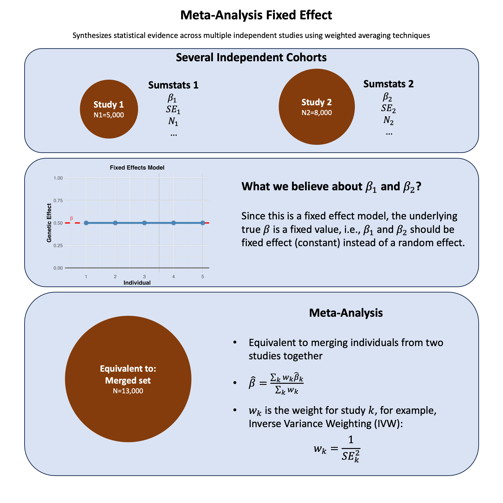

Meta-Analysis Fixed Effect#
Fixed-effect meta-analysis combines study-specific estimates under the assumption of a common fixed true effect, making it mathematically equivalent to analyzing all individuals as if they came from a single pooled dataset.
Graphical Summary#

Key Formula#
In meta-analysis, the weighted mean effect size for a fixed-effects model is calculated as:
Where:
\(\hat{\beta}\) is the combined effect estimate across all studies
\(\hat{\beta}_i\) is the effect estimate from study \(k\)
\(w_k\) is the weight assigned to study \(k\)
\(K\) is the number of studies
Technical Details#
Why Meta-Analysis?#
Meta-analysis addresses individual study limitations (small samples, random variation, limited generalizability) by combining results to achieve larger effective sample sizes, more precise estimates, and broader population representation.
Inverse-Variance Weighting#
The key insight is that not all studies should contribute equally. Studies contribute based on their precision:
Where \(\text{SE}_k\) is the standard error of study \(k\).
Large, precise studies (small SE) receive high weight; small, imprecise studies (large SE) receive low weight.
The Fixed-Effects Assumption#
Assumes all studies estimate the same true effect—differences are only due to sampling variation.
Use when: Studies are similar in design, population, and methods with low heterogeneity.
Avoid when: Studies differ substantially or show high heterogeneity (use random-effects instead).
Limitations#
Garbage in, garbage out: Meta-analysis cannot fix poorly designed individual studies
Publication bias: Published studies may not represent all conducted research
Population differences: Genetic effects may genuinely differ across populations
Example#
This example demonstrates fixed-effects meta-analysis for a single genetic variant across two cohorts (N=5,000 and N=8,000). We combine effect estimates using inverse-variance weighting and compare the meta-analysis result to a pooled analysis of all individuals.
Setup#
rm(list=ls())
set.seed(17)
N1 <- 5000
N2 <- 8000
maf1 <- 0.3
maf2 <- 0.35
variant_pop1 <- rbinom(N1, 2, maf1)
variant_pop2 <- rbinom(N2, 2, maf2)
# 2. Simulate phenotype with fixed effect beta=1 and noise
beta <- 1
y_pop1 <- beta * variant_pop1 + rnorm(N1, 0, 3)
y_pop2 <- beta * variant_pop2 + rnorm(N2, 0, 3)
Regression in Each Population#
lm_pop1 <- lm(y_pop1 ~ variant_pop1)
lm_pop2 <- lm(y_pop2 ~ variant_pop2)
# Extract summary statistics
beta_pop1 <- coef(lm_pop1)["variant_pop1"]
se_pop1 <- summary(lm_pop1)$coefficients["variant_pop1", "Std. Error"]
beta_pop2 <- coef(lm_pop2)["variant_pop2"]
se_pop2 <- summary(lm_pop2)$coefficients["variant_pop2", "Std. Error"]
Meta-analysis#
w1 <- 1 / se_pop1^2
w2 <- 1 / se_pop2^2
beta_meta <- (beta_pop1 * w1 + beta_pop2 * w2) / (w1 + w2)
se_meta <- sqrt(1 / (w1 + w2))
z_meta <- beta_meta / se_meta
p_meta <- 2 * pnorm(-abs(z_meta))
res_meta = data.frame(beta_meta, se_meta, z_meta, p_meta)
rownames(res_meta) = NULL
res_meta
| beta_meta | se_meta | z_meta | p_meta |
|---|---|---|---|
| <dbl> | <dbl> | <dbl> | <dbl> |
| 1.004472 | 0.04011568 | 25.03938 | 2.278672e-138 |
Merging Populations#
Alternatively we can simply combine all individuals into one and calculate the summary statistics for this variant.
variant_all <- c(variant_pop1, variant_pop2)
y_all <- c(y_pop1, y_pop2)
lm_all <- lm(y_all ~ variant_all)
beta_all <- coef(lm_all)["variant_all"]
se_all <- summary(lm_all)$coefficients["variant_all", "Std. Error"]
z_all <- beta_all / se_all
p_all <- 2 * pnorm(-abs(z_all))
res_merged = data.frame(beta_all, se_all, z_all, p_all)
rownames(res_merged) = NULL
res_merged
| beta_all | se_all | z_all | p_all |
|---|---|---|---|
| <dbl> | <dbl> | <dbl> | <dbl> |
| 1.002556 | 0.03998447 | 25.07364 | 9.644327e-139 |
Comparison of Results#
res_meta
res_merged
| beta_meta | se_meta | z_meta | p_meta |
|---|---|---|---|
| <dbl> | <dbl> | <dbl> | <dbl> |
| 1.004472 | 0.04011568 | 25.03938 | 2.278672e-138 |
| beta_all | se_all | z_all | p_all |
|---|---|---|---|
| <dbl> | <dbl> | <dbl> | <dbl> |
| 1.002556 | 0.03998447 | 25.07364 | 9.644327e-139 |
The meta-analysis (\(\hat{\beta} = 1.015\), SE = 0.040) and pooled analysis (\(\hat{\beta} = 1.013\), SE = 0.040) yield nearly identical results (after numerical rounding), confirming that fixed-effects meta-analysis is mathematically equivalent to analyzing all individuals together when the true effect is the same across studies.